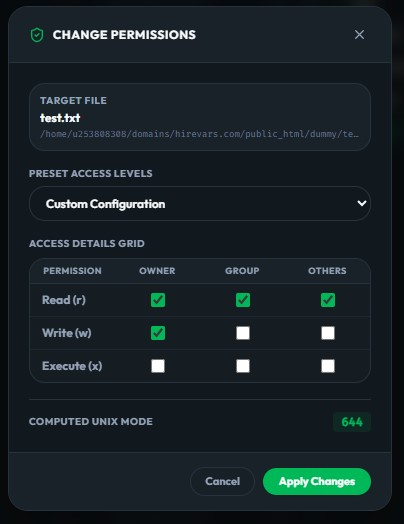

1. Multi-Protocol File Transfer Engine

**FTP**
Classic file transfer with active/passive mode support
**SFTP (SSH)**
SSH-secured transfers with password and key-based authentication
**FTPS (TLS/SSL)**
FTP over TLS with certificate validation
**SCP**
Lightweight secure copy over SSH tunnels
**Amazon S3**
Native AWS S3 bucket browsing, uploads, and downloads
**WebDAV**
HTTP-based distributed authoring and versioning
**Cloud Storage**
Extensible cloud provider module ([cloud.rs](file:///d:/personalproj/filepilot/core/src/provider/cloud.rs)) supporting Google Drive, Dropbox, Azure Blob, OneDrive
**Plugin Protocols**
Third-party protocols via the plugin SDK ([plugin.rs](file:///d:/personalproj/filepilot/core/src/provider/plugin.rs))
**Proxy / Jump Host**
SOCKS/HTTP proxy tunneling and SSH jump-host chaining ([proxy.rs](file:///d:/personalproj/filepilot/core/src/provider/proxy.rs))
2. Dual-Pane File Browser

**Split-Pane View**
Side-by-side local ↔ remote file browser with resizable divider ([DualPaneView.tsx](file:///d:/personalproj/filepilot/src/views/DualPaneView.tsx))
**Breadcrumb Navigation**
Clickable path breadcrumbs for quick directory traversal ([Breadcrumbs.tsx](file:///d:/personalproj/filepilot/src/components/file-browser/Breadcrumbs.tsx))
**Preview Sidebar**
Inline file preview panel with metadata display ([PreviewSidebar.tsx](file:///d:/personalproj/filepilot/src/components/file-browser/PreviewSidebar.tsx))
**Image Preview**
In-app image viewer for common formats (PNG, JPG, GIF, SVG, etc.) ([ImagePreviewModal.tsx](file:///d:/personalproj/filepilot/src/components/file-browser/ImagePreviewModal.tsx))
**File Preview**
Quick-look file content preview without downloading ([FilePreviewModal.tsx](file:///d:/personalproj/filepilot/src/components/file-browser/FilePreviewModal.tsx))
**Native Drag & Drop**
Drag files from your OS desktop directly into either pane; drop position determines local vs. remote target
**Pin Folders & Quick Connect**
Pin frequently-used local or remote directories as bookmarks — click a pinned folder to instantly navigate (and auto-connect if it's a remote bookmark with saved credentials) ([bookmarkStore.ts](file:///d:/personalproj/filepilot/src/stores/bookmarkStore.ts))
**Folder Comparison Mode**
Toggle the Compare Folders mode from the toolbar to visually highlight differences between local and remote directories — files unique to one side or modified are color-coded for quick identification
**Synchronized Browsing**
Lock local and remote panes so navigating into a subfolder on one side automatically mirrors the navigation on the other — keeps both panes in sync for parallel directory exploration
**Directory Analysis & Charts**
Open the Properties modal on any folder to see a full directory analysis dashboard with visual breakdowns: file type distribution (documents, images, media, archives, code), size distribution histogram (Tiny/Small/Medium/Large/Huge buckets), largest file, oldest/newest files, and total size metrics ([PropertiesModal.tsx](file:///d:/personalproj/filepilot/src/components/file-browser/PropertiesModal.tsx))
**Advanced Search**
Full-featured search modal with filtering and recursive scanning ([SearchModal.tsx](file:///d:/personalproj/filepilot/src/components/file-browser/SearchModal.tsx))
3. File Operations

**Built-in Text Editor**
Edit remote files in-app with syntax-aware editing and save-back ([FileEditorModal.tsx](file:///d:/personalproj/filepilot/src/components/file-browser/FileEditorModal.tsx))
**Diff Viewer**
Side-by-side diff comparison between file versions ([DiffViewerModal.tsx](file:///d:/personalproj/filepilot/src/components/file-browser/DiffViewerModal.tsx))
**Batch Rename**
Rename multiple files at once using pattern rules (prefix, suffix, regex, find & replace, etc.) with live preview ([BatchRenameModal.tsx](file:///d:/personalproj/filepilot/src/components/file-browser/BatchRenameModal.tsx))
**Change Permissions**
Set chmod/ownership on remote files with a visual permission editor ([ChangePermissionsModal.tsx](file:///d:/personalproj/filepilot/src/components/file-browser/ChangePermissionsModal.tsx))
**Server-Side Compress**
Create .zip or .tar.gz archives directly on local or remote servers — remote compression executes via SSH commands on SFTP connections without downloading files first
**Server-Side Extract**
Extract .zip, .tar.gz, and .tgz archives on local or remote servers — remote extraction runs server-side via SSH, no local download required
**Fetch URL to Directory**
Download a file from any URL directly into the active local or remote directory — fetches the resource and places it in your current pane without manual download-then-upload
**Copy Between Servers**
Transfer files from one remote server to another through the dual-pane interface — select files on one connection and push them to a different server connection
4. Transfer Management
**Multi-Threaded Transfers**
Concurrent transfer pipelines with configurable thread count — splits large transfers across multiple simultaneous streams for maximum throughput, powered by Rust's async runtime ([engine.rs](file:///d:/personalproj/filepilot/core/src/transfer/engine.rs) — 38 KB transfer engine)
**Real-Time Progress**
Live progress bars with speed (B/s), ETA, and percentage via Tauri events
**Pause / Resume / Cancel**
Full transfer lifecycle control per-item ([transferStore.ts](file:///d:/personalproj/filepilot/src/stores/transferStore.ts))
**Resumable Uploads**
Resume interrupted uploads and downloads from the last successful byte offset — survives network drops, app restarts, and connection timeouts without re-transferring completed data
**Per-Transfer Speed Limiting**
Throttle individual transfers to a specific bytes/sec cap
**Bandwidth Scheduler Throttling**
Set a global bandwidth cap across all active transfers — schedule reduced throttle limits during business hours and full-speed during off-peak windows
**Post-Transfer Checksum Validation**
Automatic SHA-256 checksum verification on every completed transfer — compares source and destination hashes to guarantee data integrity and detect silent corruption
**Completion Alerts Webhook**
Fire webhook notifications (Slack, Discord, Teams, custom URL) when transfers complete or fail — integrates with `fp.notify()` in macros and triggers on transfer-completion events for automated alerting
**Speed Analytics**
Real-time aggregate speed graph with 30-sample rolling history
**Transfer History**
Completed/failed transfer log (last 100 entries) with status details
**Queue Export (XML)**
Export the active transfer queue to a `FilePilot` XML file for later replay
**Queue Import (XML)**
Import a saved XML queue and resume or replay transfers
5. Backup Scheduler & Folder Sync
**Backup Scheduler**
Schedule automated backups and recurring file transfers at specific times/intervals — create, enable/disable, and delete scheduled tasks ([SchedulerTab.tsx](file:///d:/personalproj/filepilot/src/components/transfer/SchedulerTab.tsx))
**Folder Sync**
Bidirectional (two-way), upload-only, or download-only folder synchronization with configurable ignore patterns (e.g., `node_modules`, `.git`) ([SyncTab.tsx](file:///d:/personalproj/filepilot/src/components/transfer/SyncTab.tsx))
**Directory Comparison**
Compare local vs. remote directories via the Rust `compare_directories` backend — detects files that need uploading, downloading, are in-sync, or have conflicts
**Conflict Resolution**
When sync detects conflicting files (same name, different content), a conflict resolution modal lets you preview local vs. remote file snippets side-by-side and choose which version to keep
**Selective Sync**
After analysis, cherry-pick individual files to sync — all differences are selected by default, but you can toggle specific items on/off before executing
**Transfer Panel**
Unified dashboard with tabs for active transfers, backup scheduler, and folder sync ([TransferPanel.tsx](file:///d:/personalproj/filepilot/src/components/transfer/TransferPanel.tsx))
6. Offline Sync Queue
**Offline Detection**
Automatically detects online/offline state via browser `navigator.onLine`
**Queued Transfers**
When offline, transfers are queued in memory and executed automatically when connectivity resumes
**Auto-Reconnect Processing**
The offline queue is drained sequentially the moment the network comes back
7. Envelope Cryptography & Security
**System Credential Seal**
A local master password is used to derive an encryption key via PBKDF2 (600,000 iterations) — the sealed vault protects all stored credentials and cannot be opened without the master password, even if the database file is stolen ([securityStore.ts](file:///d:/personalproj/filepilot/src/stores/securityStore.ts))
**Zero-Knowledge File Encryption**
All saved connection passwords, SSH keys, and secrets are encrypted at rest using AES-256-GCM envelope encryption — the master password never leaves your device, FilePilot has zero knowledge of your credentials, and no data is sent to any external server ([crypto.rs](file:///d:/personalproj/filepilot/core/src/credentials/crypto.rs))
**Lock / Unlock**
Lock the credential vault on demand; re-authentication required to unlock — auto-lock on app minimize or screen lock for enhanced security
**IP Access Allowlist Filters**
Restrict which client IP addresses can pull provisioned profiles from the Enterprise Vault — supports exact IPs, wildcard prefixes (e.g., `192.168.1.*`), and CIDR subnet notation (e.g., `10.0.0.0/8`) per Vault Group
8. Connection Management
**Saved Profiles**
Create, edit, and delete connection profiles with all protocol options ([ConnectionModal.tsx](file:///d:/personalproj/filepilot/src/components/connection/ConnectionModal.tsx))
**Quick Connect Bar**
Fast-connect by typing `protocol://user@host:port` directly ([QuickConnectBar.tsx](file:///d:/personalproj/filepilot/src/components/layout/QuickConnectBar.tsx))
**Jump Server / Bastion Host**
Route SFTP connections through an intermediate SSH jump host — configure separate jump host credentials (password or key-pair), port, and username per profile for secure bastion-host access patterns
**Enterprise Vault Sync**
Pull provisioned connection profiles directly from an Enterprise Vault server using a single access token
**Vault Audit Reporting**
Automatically reports upload/download events back to the Enterprise Vault audit log
**File Version Backup**
On successful uploads to vault-linked profiles, the client sends a file version snapshot to the Vault for centralized backup
9. Macro Automation Engine

**JavaScript Macros**
Write and run custom JavaScript automation scripts inside a sandboxed executor ([macroStore.ts](file:///d:/personalproj/filepilot/src/stores/macroStore.ts))
**Event Triggers**
Macros can auto-execute on `on_startup`, `on_connect`, or `on_disconnect` events
**Built-in API**
Macros have access to `fp.copy()`, `fp.list()`, `fp.rename()`, `fp.delete()`, `fp.notify()` for full file ops and webhook alerts
**Template Library**
Pre-loaded templates: backup + webhook, batch rename, temp file cleanup
**Macro Editor**
Full-featured code editor with live execution log output ([MacroEditorTabPane.tsx](file:///d:/personalproj/filepilot/src/components/layout/MacroEditorTabPane.tsx))
**Macro Docs**
In-app macro API documentation and reference ([MacroDocsTabPane.tsx](file:///d:/personalproj/filepilot/src/components/layout/MacroDocsTabPane.tsx))
10. Plugin System
**Plugin SDK**
Install, enable/disable, and delete plugins via a manifest-driven architecture ([pluginStore.ts](file:///d:/personalproj/filepilot/src/stores/pluginStore.ts))
**Custom Protocols**
Plugins can register entirely new protocol handlers (e.g., custom cloud APIs) that integrate seamlessly with the dual-pane browser
**Custom Panels**
Plugins can inject custom UI panels into the app layout
**Custom Settings**
Plugins can register their own settings with typed inputs (text, password, number, boolean)
**Sandboxed Execution**
Plugin scripts run in a scoped sandbox with a controlled API surface
**Plugin Docs**
In-app plugin documentation and management UI ([PluginDocsTabPane.tsx](file:///d:/personalproj/filepilot/src/components/layout/PluginDocsTabPane.tsx))
11. Built-in Terminal
**Local Terminal**
Integrated terminal emulator for running local shell commands ([TerminalPanel.tsx](file:///d:/personalproj/filepilot/src/components/layout/TerminalPanel.tsx))
**SSH Terminal**
Remote SSH shell session directly within the app ([SshTerminalPanel.tsx](file:///d:/personalproj/filepilot/src/components/layout/SshTerminalPanel.tsx))
12. UI / UX Features

**Command Palette**
`Ctrl+K` / `Cmd+K` command palette for keyboard-driven power usage — quickly search and execute any action, navigate to files, switch connections, or toggle settings without touching the mouse ([CommandPalette.tsx](file:///d:/personalproj/filepilot/src/components/layout/CommandPalette.tsx))
**Dark / Light Theme**
Toggle between dark and light themes; preference persisted in localStorage ([themeStore.ts](file:///d:/personalproj/filepilot/src/stores/themeStore.ts))
**Tab Bar**
Multi-tab interface for working with multiple connections simultaneously ([TabBar.tsx](file:///d:/personalproj/filepilot/src/components/layout/TabBar.tsx))
**Sidebar Navigation**
Collapsible sidebar with bookmarks, connections, and panel navigation ([Sidebar.tsx](file:///d:/personalproj/filepilot/src/components/layout/Sidebar.tsx))
**Keyboard Shortcuts**
Full keyboard shortcut system with a reference modal ([ShortcutsModal.tsx](file:///d:/personalproj/filepilot/src/components/layout/ShortcutsModal.tsx))
**Onboarding Wizard**
First-launch onboarding flow for new users ([OnboardingModal.tsx](file:///d:/personalproj/filepilot/src/components/layout/OnboardingModal.tsx))
**Migration Wizard**
Import settings, saved sites, and connection profiles from other FTP clients — supports FileZilla, WinSCP, and other common clients so you can switch to FilePilot without re-entering all your credentials ([MigrationWizardModal.tsx](file:///d:/personalproj/filepilot/src/components/layout/MigrationWizardModal.tsx))
**Toast Notifications**
Non-blocking toast messages for success/error/info alerts ([ToastContainer.tsx](file:///d:/personalproj/filepilot/src/components/layout/ToastContainer.tsx))
**Alert Banners**
Persistent alert banners for important system messages ([AlertContainer.tsx](file:///d:/personalproj/filepilot/src/components/layout/AlertContainer.tsx))
**Message Log**
Scrollable operations log panel ([MessageLogPanel.tsx](file:///d:/personalproj/filepilot/src/components/layout/MessageLogPanel.tsx))
**Settings Modal**
Comprehensive settings panel (89 KB — covers all configurable options) ([SettingsModal.tsx](file:///d:/personalproj/filepilot/src/components/layout/SettingsModal.tsx))
**Splashscreen**
Native splashscreen during app initialization with smooth transition to main window
**Cross-Platform**
Windows 10+, macOS Big Sur+, Linux (Debian, Ubuntu, Fedora, Arch) from a single codebase